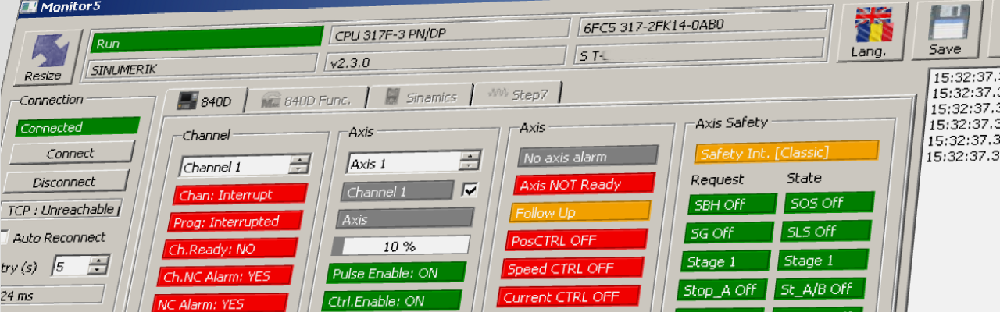

20.05.14; May.2020
Monitor 5
help

Description
'Monitor 5' may be used for diagnosis of Sinumerik 840D, Sinamics or Step7 systems connected via Ethernet.
No installation is needed, the program is portable and saves all data in .INI files in own folder.
To 'uninstall' simply delete the folder.
Monitor5 is using Snap7 under LGPL3 Licence to communicate with the Sinumerik/Sinamics/Step7 equipment.
Monitor5 is using Qt under LGPL3 Licence.
TAB 840D: For Sinumerik 840D (sl):
Monitor5 may be used to:
- monitor the most important enable signals for axis movement.
- calculate bit number in DB2 for an OEM alarm number
- calculate OEM alarm number for a bit in DB2
- monitor / change bit status for an OEM Alarm
- calculate bit number in DB21...DB30 for quick decode of M functions
- calculate number of M function for a specific bit in DB21...DB30
- monitor / change bit status for an (quick decoded) M function
- calculate relevant bits in DB10 for a specific NCK (fast) Input
TAB 840D Funct: For Sinumerik 840D (sl):
Monitor5 may be used to:
- monitor and record all the M (Miscellaneous), S (Spindle Speed), T (Tool) functions, D (cutting edges for a tool) or H (as Integer or as Real) functions sent from a Part Program to PLC.
There are two windows so is possible to monitor simultaneous two types of functions (e.g. T and D functions) from the same Channel or from two different Channels of the NC.
TAB SINAMICS: For Sinamics S or G with Ethernet interface:
Monitor5 may be used to:
- monitor the most important enable signals for drive movement.
- monitor and record Messages and Alarms for a drive
- display Help for a Sinamics Alarm or Message
- monitor / change online the value of a generic parameter
TAB Step7: For a Step7/Sinumerik CPU or Sinamics CU unit with Ethernet interface:
Monitor5 may be used to:
- monitor/change the value for a number of variables (I, Q, M, DB (not optimized DB's).
- display a Graph with the monitored variables